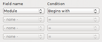

Nouvelles fonctionnalités OpenOffice.org 3.2
Contenu |
|
|
|
|
Les notes de version techniques complètes contenant la liste des fonctionnalités et la liste des Child Workspaces intégrés peuvent être lues ici : http://development.openoffice.org/releases/3.2.0.html (en anglais). Archive des annonces des nouveautés de la version 3.2 sur la liste de discussion dev@fr.openoffice.org |
|
Améliorations générales
Temps de démarrage plus rapide
 OpenOffice.org
3.2 Calc et Writer ont tous deux un temps de 'démarrage à froid' réduit
de 46% depuis que la version 3.0 a été mise à disposition il y a un an,
voir
les tests réalisés par nos développeurs (les résultats diffèrent suivant les systèmes d'exploitation et le matériel).
OpenOffice.org
3.2 Calc et Writer ont tous deux un temps de 'démarrage à froid' réduit
de 46% depuis que la version 3.0 a été mise à disposition il y a un an,
voir
les tests réalisés par nos développeurs (les résultats diffèrent suivant les systèmes d'exploitation et le matériel).
Prise en charge ODF
Le standard Open Document Format (ODF), comme promu par l'Organization for the Advancement of Structured Information Standards (OASIS), a défini des critères de compatibilité internationaux pour le stockage électronique/numérique de documents.
Ces standards reconnaissent l'importance de l'interopérabilité et de l'échange d'information intelligent et cherche, par exemple, à s'assurer que les documents bureautiques créés aujourd'hui sur n'importe quel système d'information seront lisibles par un autre système informatique n'importe quand, incluant les technologies de demain.
OpenOffice.org 3.2 a progressé dans la mise en conformité avec l'ODF 1.2, notamment une meilleure conformité avec les spécifications OASIS ODFF/OpenFormula.
- Comme OpenOffice.org 3.2 nécessite actuellement un sous-ensemble de spécifications de l'ODF 1.2, le logiciel avertit l'utilisateur lorsqu'une fonctionnnalité de l'ODF 1.2 Étendu a été utilisée.
- La vérification de l'intégrité du document prouve qu'un document ODF est conforme à la spécification de l'ODF (cela affecte principalement les documents ODF 1.2). Si une incohérence est trouvée, le document est traité comme s'il était cassé et OpenOffice.org offre de le réparer.
Prise en charge de fichier propriétaire
OpenOffice.org 3.2 fournit une prise en charge améliorée des autres types de documents bureautiques courants.
- Les fichiers Microsoft Office XML protégés par mot de passe (types de documents supportés : documents MS Word 2007 (*.docx, *.docm); modèles MS Word 2007 (*.dotx, *.dotm); documents MS Excel 2007 (*.xlsx, *.xlsm); documents binaires MS Excel 2007 (*.xlsb); modèles MS Excel 2007 (*.xltx, *.xltm); documents MS Powerpoint 2007 (*.pptx, *.pptm); modèles MS Powerpoint 2007 (*.potx, *.potm)).
- Les objets OLE, les contrôles de formulaire et les pilotes de données peuvent maintenant être lus dans les documents MS Excel 2007 (*.xlsx, *.xlsb).
- Prise en charge du chiffrage dans le filtre Microsoft Word 97/2000/XP permettant aux documents Word protégés par mot de passe d'être enregistrés (en utilisant l'algorithme Microsoft Office standard RC4).
- Les filtres pour AportisDoc et PocketWord prennent en charge la détection du type basée sur DocType. Les fichiers dans ce format peuvent donc être chargés sans sélectionner explicitement le type de document dans le gestionnaire de fichiers.
- Lors de l'écriture de données de fichier SYLK les guillemets doubles intégrés ne sont plus échappés en les doublant, les points virgules sont maintenant échappés en les doublant. Cela améliore la compatibilité avec les fichiers créés par d'autres applications.
Prise en charge des polices OpenType basées sur Postscript.
Il y a beaucoup de polices OpenType libres et commerciales de bonne qualité basées sur une mise en forme Postscript. Elles sont maintenant prises en charge pour le formatage, l'impression, l'export PDF et l'affichage.
Writer
Complétion automatique des mots
Writer peut retenir de façon permanente toute addition à la liste des mots collectés lors de la rédaction d'un document. Une nouvelle case à cocher À la fermeture du document, supprimer de la liste les mots collectés à partir de celui-ci rend cette fonctionnalité plus accessible.
La prise en charge Mediawiki fournie sous forme d'extension
Pour éviter les conflits, le filtre MediaWiki ne fait plus partie de l'installation OpenOffice.org, à la place, elle sera fournie comme partie de l'extension Wiki Publisher qui permettra de mettre à jour le filtre sans avoir à attendre la version suivante d'OpenOffice.org.
Calc
Les bordures de cellules prennent en charge la sélection multiple.
 Auparavant,
il n'était possible d'appliquer des bordures qu'à une seule plage de
cellules rectangulaire. Les bordures peuvent maintenant être appliquées
à n'importe quelle sélection de cellules. Une liste de plages
rectangulaires est déterminée à partir de la sélection et les bordures
internes et externes sont appliquées à chacune des plages
Auparavant,
il n'était possible d'appliquer des bordures qu'à une seule plage de
cellules rectangulaire. Les bordures peuvent maintenant être appliquées
à n'importe quelle sélection de cellules. Une liste de plages
rectangulaires est déterminée à partir de la sélection et les bordures
internes et externes sont appliquées à chacune des plages
Le remplissage automatique prend en charge des cas supplémentaires
Si la première cellule du remplissage contient un nombre au début et à la fin et qu'il n'y a pas d'espace après le premier nombre, le nombre à la fin est incrémenté. Cela permet la création de listes d'adresses IP par exemple (10.0.0.1 est suivi par 10.0.0.2).
Améliorations du tri
 Si le "tri" est appelé par une sélection qui ne correspond pas à la plage que l'utilisateur veut traiter,
une nouvelle boîte de dialogue lui demande si la sélection doit être étendue pour contenir les cellules supplémentaires.
Si le "tri" est appelé par une sélection qui ne correspond pas à la plage que l'utilisateur veut traiter,
une nouvelle boîte de dialogue lui demande si la sélection doit être étendue pour contenir les cellules supplémentaires.
Lorsqu'une plage de cellules est triée en utilisant le bouton de la barre d'outils "Tri croissant" ou "Tri décroissant", les formats de cellules sont maintenant triés avec les cellules.
Meilleure prise en charge des cellules fusionnées
Les cellules fusionnées peuvent maintenant être collées à partir du presse-papiers dans des cellules fusionnées, les anciennes cellules sont disjointes
L'insertion ou la suppression de cellules, colonnes ou lignes dans des cellules fusionnées qui provoquait un message d'erreur est maintenant possible. Les plages de cellules fusionnées sont agrandies/réduites.
Copier et coller complexes
Cette fonction étend la fonction actuelle de copier et coller de Calc pour permettre de copier un ensemble de plages multiples non contiguës. Lors du collage, toutes les données sont consolidées dans une plage unique horizontalement ou verticalement. Il y a certaines restrictions lorsque les cellules sont copiées afin d'assurer que la plage copiée devienne une plage rectangulaire.
Améliorations des fonctions statistiques
- Le 4ème paramètre de la fonction LOI.NORMALE est facultatif.
- 0 ou Faux calcule la densité de probabilité. Tout autre valeur ou Vrai ou omis calcule la fonction de répartition.
- Si omis, 1 est écrit dans le fichier pour des raisons de compatibilité descendante.
- Les 2nd et 3ème paramètres de la fonction LOI.LOGNORMALE sont maintenant facultatifs
et un 4ème paramètre a été ajouté.
- Le second paramètre, moyenne, a la valeur 0 si omis. Si omis, 0 est écris dans le fichier pour des raisons de compatibilité descendante.
- Le troisième paramètre, l'écart type, a la valeur 1 par défaut si omis. Si omis, 1 est écrit dans le fichier pour des raisons de compatibilité descendante..
- Le quatrième paramètre, cumulatif, est défini comme 0 ou Faux et calcule la fonction de densité de probabilité. Tout autre valeur ou Vrai ou omis calcule la fonction de répartition. Si une valeur a été donnée, les précédentes versions lisant ce fichier ne pourront interpréter la fonction et renverront une erreur.
Préservation du caractère de nouvelle ligne dans les formules
Les caractères de nouvelle ligne créés avec la combinaison de touche Ctrl+Entrée dans les cellules sur plusieurs lignes sont maintenant préservés dans les formules de calcul. Précédemment le caractère de nouvelle ligne était remplacé par un caractère d'espace. Le caractère de nouvelle ligne peut être recherché en utilisant les fonctions RECHERCHE, RECHERCHE[HV] ou MATCH à l'aide de l'expression régulière \n.
Conversion numérique dans les chaînes
Lors de l'interprétation d'une expression de formule, le contenu de la chaîne est maintenant convertit en valeur numérique si la conversion est non ambiguë ou une erreur #VALEUR! est renvoyée si aucune conversion non ambiguë n'est possible. Les espaces en début et fin sont ignorés.
Des informations plus détaillées sont disponibles ici.
Remarque : la conversion à la volée est naturellement plus lente que le calcul avec des valeurs numériques. Les utilisateurs peuvent préférer l'extension Convert Text to Number (CT2N) pour convertir interactivement des nombres textuels en valeurs numériques permanentes.
Fonction supplémentaire dans les filtres
La boîte de dialogue "Filtre standard" affiche maintenant 4 conditions au lieu de trois et comporte une barre qui permet d'accéder à 8 conditions au total. Elle prend en charge les conditions de filtre "Contient", "Ne contient pas", "Commence par", "Ne commence pas par", "Finit par" et "Ne finit pas par".
{kind=link}
Bascule entre références relative et absolue améliorée
Le raccourci Maj+F4 pour basculer entre les références relatives et absolues dans les formules peut maintenant être utilisé pour une sélection de cellules et prend en charge toutes les formules dans une sélection.
Plusieurs nouveaux facteurs dans CONVERT_ADD
 La fonction CONVERT_ADD (connue comme CONVERTIR dans les autres applications) contient beaucoup de facteurs
de conversions, comme défini dans le format
OASIS ODFF/OpenFormula.
La fonction CONVERT_ADD (connue comme CONVERTIR dans les autres applications) contient beaucoup de facteurs
de conversions, comme défini dans le format
OASIS ODFF/OpenFormula.
Nouvelles fonctions UNICODE et UNICAR
Les nouvelles fonctions UNICODE et UNICAR sont implémentées comme définies dans la spécification OASIS ODFF/OpenFormula.
- UNICODE renvoie le point de code standard Unicode / ISO 10646 correspondant au premier caractère de la valeur de texte ;
- UNICAR (UNICODE CARactère) renvoie le caractère de tout point de code Unicode valide.
Draw
Nouveaux commentaires
Draw prend en charge les commentaires (précédemment connus comme notes) pour le travail collaboratif.
Compte des pages ajouté à Draw
Draw prend en charge le champ de texte "Nombre de page".
Impress
Nouveaux commentaires
Impress prend en charge les commentaires (précédemment connus comme notes) pour le travail collaboratif.
{kind=link}
Compte des pages ajouté à Impress
Impress prend en charge le champ de texte "Nombre de page".
Math
Modification des menus Math
L'entrée de menu "Affichage/Sélection" dans Math est maintenant appelée "Affichage/Éléments de formule".
Base
Personnalisation de l'assistant Créer un base de données
OpenOffice.org 3.2 introduit une option de configuration permettant de contrôler la disponibilité de l'option "Créer une nouvelle base de données dans l'assistant "Créer une nouvelle base de données".
Une nouvelle option de configuration contrôle si l'assistant "Créer une base de données" (démarré par Fichier/Nouveau/Base de données) affiche l'option "Créer une nouvelle base de données".
Copie simplifiée des requêtes entre documents de base de données
Lors de la copie de requêtes entre documents de base de données, Base ne demandera plus un nom pour la cible, à moins que l'action de copie écrase le nom de table existant.
Zoom des formulaires de base de données
Les formulaires de base de données peuvent être zoomés tout comme les autres documents. La fonction actuelle "Ctrl+molette de la souris" est remplacée par un élément de menu Affichage/Zoom et le curseur de zoom dans la barre d'état.
Import plus intelligent dans Base
 L'assistant Copier une table contient maintenant une case à cocher supplémentaire qui est active lorsque
des données au format RTF ou HTML doivent être copiées dans une base de données. La case à cocher est appelée : Utiliser la première ligne
comme noms de colonne
; lorsqu'elle est cochée, la première ligne est utilisée pour
identifier les noms de colonnes, lorsqu'elle n'est pas cochée, la
première ligne est traitée comme une ligne de données normale.
L'assistant Copier une table contient maintenant une case à cocher supplémentaire qui est active lorsque
des données au format RTF ou HTML doivent être copiées dans une base de données. La case à cocher est appelée : Utiliser la première ligne
comme noms de colonne
; lorsqu'elle est cochée, la première ligne est utilisée pour
identifier les noms de colonnes, lorsqu'elle n'est pas cochée, la
première ligne est traitée comme une ligne de données normale.
Pour plus de détails sur les nouvelles fonctionnalités de Base, veuillez consulter la page dédiée du wiki.
Chart
Nouveaux types de diagramme
 L'assistant Diagramme - utilisé pour créer des diagrammes - inclut maintenant les diagrammes à Bulle
et une nouvelle variante de diagramme Toile - Rempli.
L'assistant Diagramme - utilisé pour créer des diagrammes - inclut maintenant les diagrammes à Bulle
et une nouvelle variante de diagramme Toile - Rempli.
Amélioration de l'ergonomie dans les diagrammes
L'interface utilisateur des diagrammes a été améliorée. Les utilisateurs noteront que l'élément Propriétés de l'objet a été remplacé par des termes plus spécifiques tels que Formater la légende.... Le menu contextuel permet d'atteindre les outils en un clic. Pour plus de détails veuillez consulter le blog sur GullFOSS (anglais).
Améliorations des étiquettes de données
Les options pour les étiquettes de données ont été étendues. Il est maintenant possible de tourner les étiquettes. C'est très utile pour les diagrammes en colonne afin d'éviter que les étiquettes se chevauchent entre elles.
Onglet de typographie asiatique pour les éléments de diagramme.
Un nouvel onglet Typographie asiatique est disponible pour le titre, la légende, les axes et les séries de données. Il contient une option pour activer ou désactiver l'espacement entre les différents types de texte.
Internationalisation et Localizations
Nouvelles locales prises en charge
OpenOffice.org 3.2 ajoute la prise en charge de : Oromo_Ethiopia [om-ET], Uyghur_China [ug-CN], Ancient Greek [grc-GR], Somali_Somalia [so-SO], Sorbian, Lower [dsb-DE] and Upper [hsb-DE, Asturian_Spain [ast-ES], Yiddish_Israel [yi-IL], Arabic (Oman) [ar-OM], Sardinian_Italy [sc-IT, and Quechua (Ecuador) [qu-EC].
La locale peut être sélectionnée pour l'attribution des caractères et la correction orthographique, comme locale par défaut pour l'interface et les documents et est disponible pour les formats de nombre et la numérotation du plan - voir : les notes de version pour plus de détails.
Ordre des nom et prénom en japonais
En langue japonaise, l'ordre des champs Prénom et Nom dans la page d'options des données de l'utilisateur a été inversé. Cette fonctionnalité n'est pas liée à la langue de l'interface, mais à la locale sélectionnée.
Prise en charge de la technologie de police Graphite
OpenOffice.org prend en charge la technologie de police Graphite pour un meilleur support des scripts et variantes utilisées par des graphies minoritaires. L'utilisation de cette technologie permet la prise en charge de différents scripts nécessaires à ces graphies minoritaires.